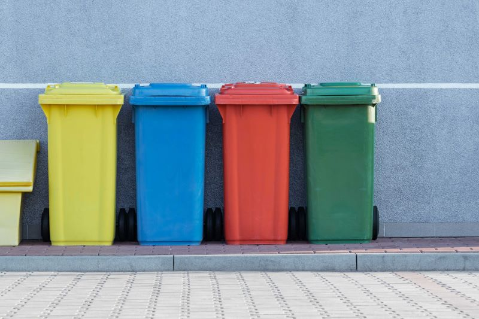
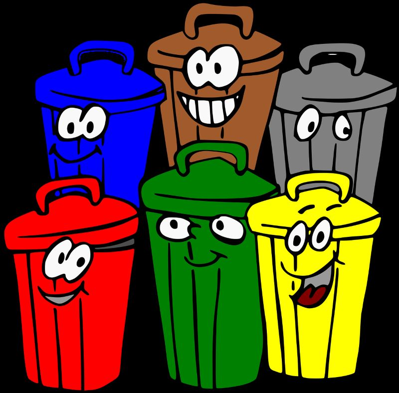
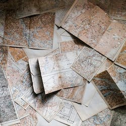

Pontos de Coleta de Materias Recicláveis
Contamos com a sua parceria para expandir essa iniciativa e transformar a maneira como lidamos com o descarte de materiais recicláveis. Junte-se a nós e faça parte dessa jornada de mudança!

Como encontrar um Ponto de Coleta?
- Inicie a pesquisa informando o estado e a cidade onde deseja encontrar um ponto de coleta.
- Informe o tipo de material que deseja descartar.
- Clique no botão pesquisar
- Visualize os resultados da pesquisa no campo resultados.
Encontre Aqui !
Escolha o Pontos de Coleta
Clique em saiba mais para obter mais informações do ponto de coleta como o endereço, horário de funcionamento, tipos de materias aceitos e outra orientações importantes
>
Ecoponto reciclaveis
Trague seus Descartes e ganhe Moeda Verde
 >
>
Ferro Velho Tudo Novo
Trague seus Descartes e ganhe Moeda Verde

Rede Superbom Mercados
Trague seus Descartes e ganhe Moeda Verde
